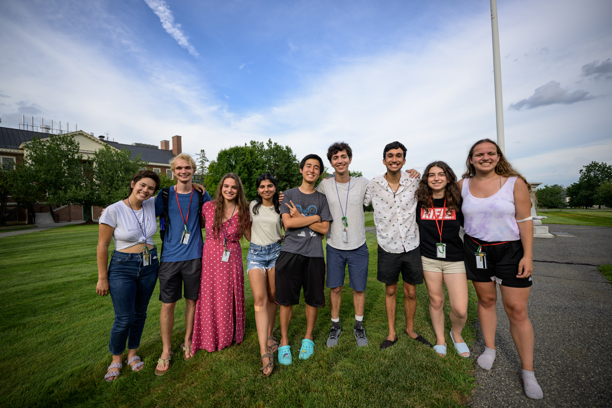
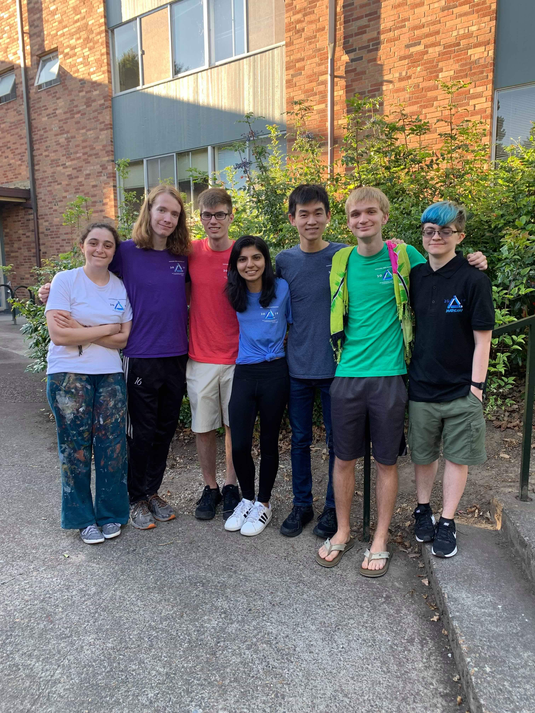
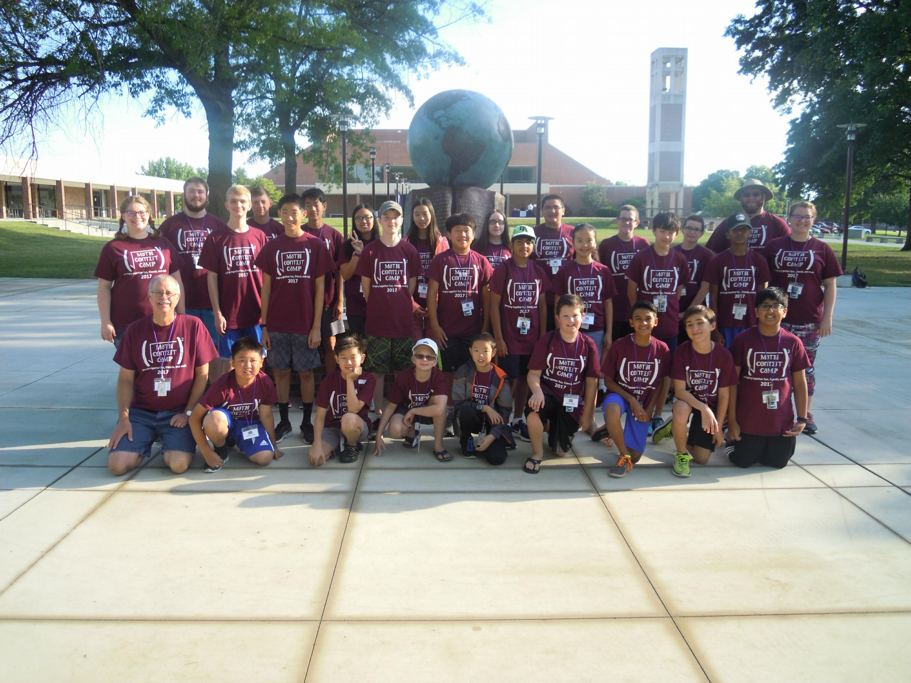
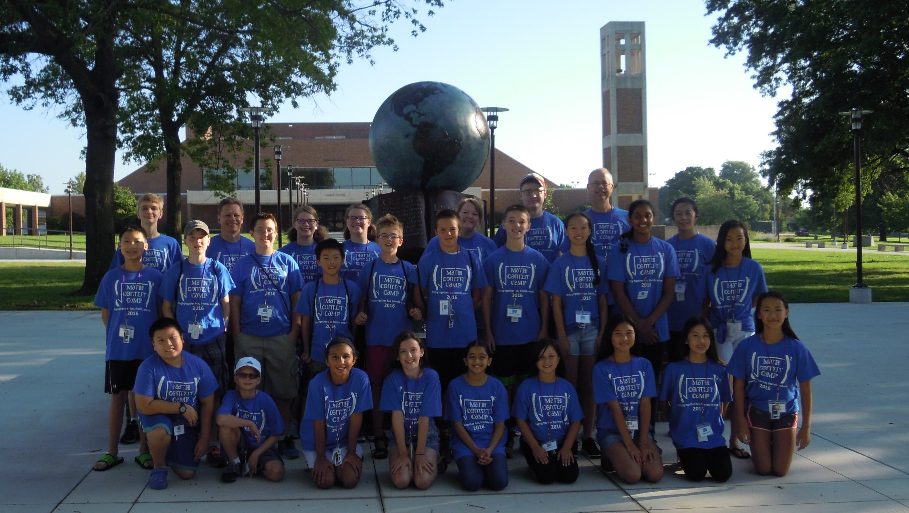
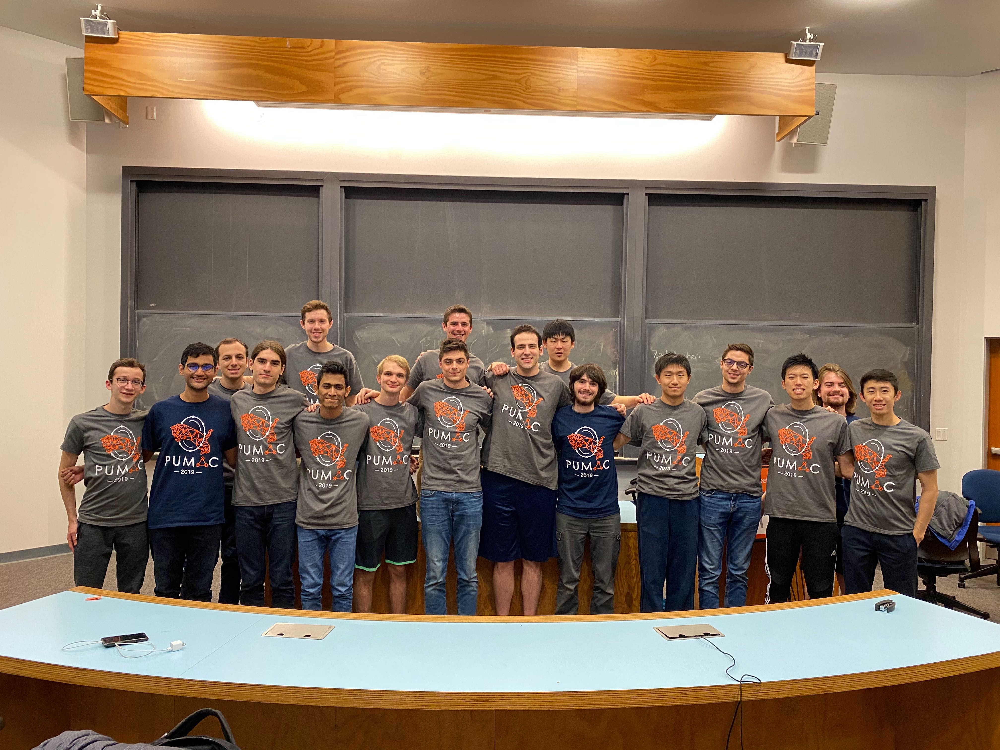
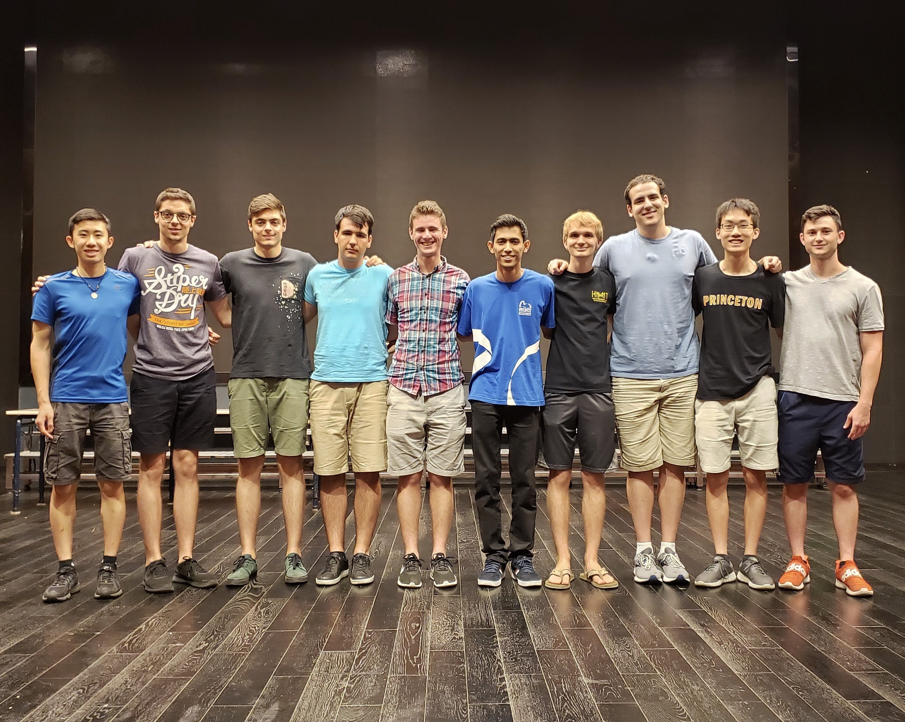
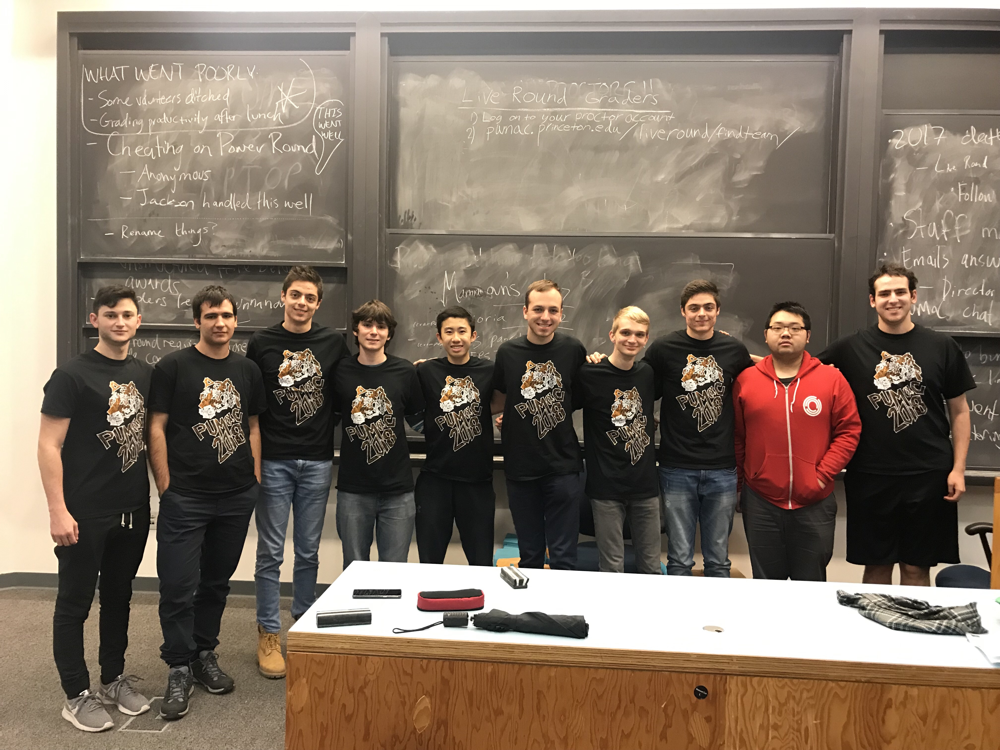
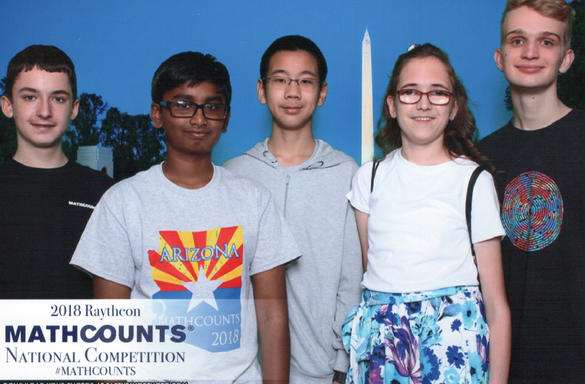

Curricular teaching:
2022-2025.
University of Illinois Chicago. I was a teaching assistant for Calculus I, Calculus II, Calculus III, and College Algebra; and an instructor of record for an Emerging Scholars Workshop for Calculus II, a support course for Analysis I, and
Experience UIC.
Extracurricular teaching:
2023-2025.
DRP at UIC. Co-organizer (2023-2025), mentor (2023, 2025), co-founder (2023).
2024-2025.
Commutative and Homological Algebra Graduate Seminar. Co-organizer.
2018-2019.
Petey Greene Program. Tutor.
Math outreach:
2022-2025.
Math Circles of Chicago. I worked for their
math circles,
math festivals, and
QED symposia.
2020.
Princeton Math Club. Social chair.
Summer camps:
2024.
YSP at UIC. Instructor.
2019, 2022.
Canada/USA Mathcamp (pictured twice). Head
JC.
2016-2017.
Math Contest Camp (pictured twice). Counselor.




Contests:
2018-2019.
PUMaC (pictured three times). Head problem czar (2019), head of PUMaC China (2019), problem czar (2018).
2018.
MATHCOUNTS (pictured). Coach of the Arizona team.



